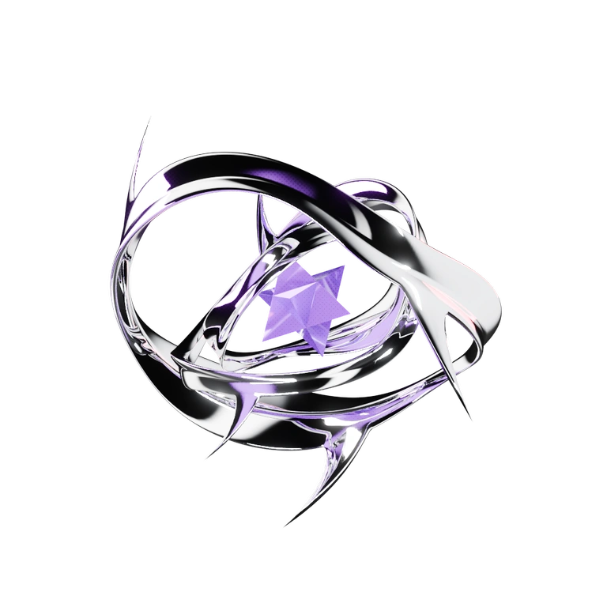

Information has a rhythm.
Large condensed statements, legible reading columns, technical captions and fine rules. The page stays open and readable, with a strong shared grid.
EDITORIAL CYBERCORE · LIQUID METAL · PRINT REGISTRATION
A little human. A little unstable.
Warm paper. Impossible chrome. Technical marks with a personal pulse.
This is the common language for the portfolio: a printed field notebook interrupted by a sculpture that could never exist. The typography carries the information; the metal carries the spectacle.

Large condensed statements, legible reading columns, technical captions and fine rules. The page stays open and readable, with a strong shared grid.
Broad folded mirror faces, thorned edges and deep black reflections. A precise eight-point Stella Octangula turns at the center. Chrome earns its place through form and light.
Purple ink dots, offset color channels, small red marks and a hand-drawn signature. Precision meets the mess of being a person.
Cream gives the eye somewhere to rest. Violet establishes identity. Red recurs across the whole page as a meaningful signal.
#F5F3EDThe ground. Most of the page.
#292630Readable text and mirror contrast.
#5E3BC4Identity, structure and atmosphere.
#AF3047Status, actions, paths and registration.
#6C6572Secondary information.
#D3CFD5Quiet alignment and boundaries.
Masthead mark → status datum → project stamp → About trace → contact action. Vary the gesture; keep its meaning.
Names and section punches. Condensed, confident, oversized. Give the forms breathing room and preserve the offset depth.
Project headings, actions and compact interface statements. Technical character with a clear purpose.
Descriptions, paragraphs and ordinary UI. Comfortable line length and spacing do the work.
Labels, coordinates, dates and tags. Small and deliberate, with enough contrast to read.
Short italic notes and personal phrases. A softer interruption of the machine precision.
Crisp red/magenta and cyan edge splits on selected subjects. Keep a sharp original image or letterform. Pointer movement shifts the channels, never the portrait itself.
USE / NAME, PORTRAIT, SELECTED SCULPTURE EDGES
Overlapping radial violet fields fade into paper. Halftone belongs to shadow and silhouette. Project washes reach the card edges without looking like a floating square or stripe.
USE / HERO STAGE, PROJECT ART
Hairlines, measured bends, nodes, ticks and cropped registration corners frame the information. Red marks carry signals; the remaining linework stays quiet.
USE / TRANSITIONS, CAPTIONS, ACTIVE STATES
Offline rendering keeps the mirror detail consistent and avoids a live 3D workload. The faceted amethyst center turns slowly around a tilted axis. Arrival fades should remain visible when scrolling quickly, without shifting the layout or hijacking scrolling.
Pause motion and reduced motion leave a complete still composition. Small traces can signal activity; reading surfaces stay stable.
Bold name and dimensional color registration. One sculptural chrome object. Soft violet atmosphere, perimeter traces and clear status.
Distinct marks on compact art surfaces. Consistent metadata and red signals. Texture relates to each project’s subject.
Personal portrait, readable narrative, one strong heading and technical annotations. Human warmth stays visible inside the system.
Clear destinations, repeatable signal details and a circuit motif that joins the composition. Interaction has a visible response.
Keep: folded chrome contrast, selected chromatic edges, masked halftone, recurring red signals, readable paper and deliberate type.
Cut: unrelated chrome stickers, central gradient squares, broad color stripes, constant blur, boxed-everything interfaces, portrait rotation and scroll jitter.